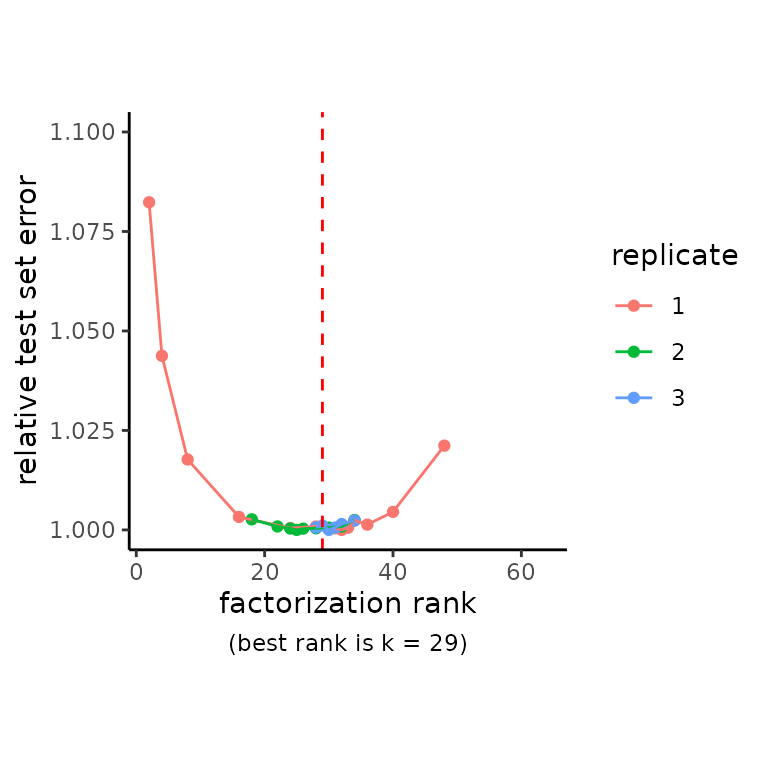
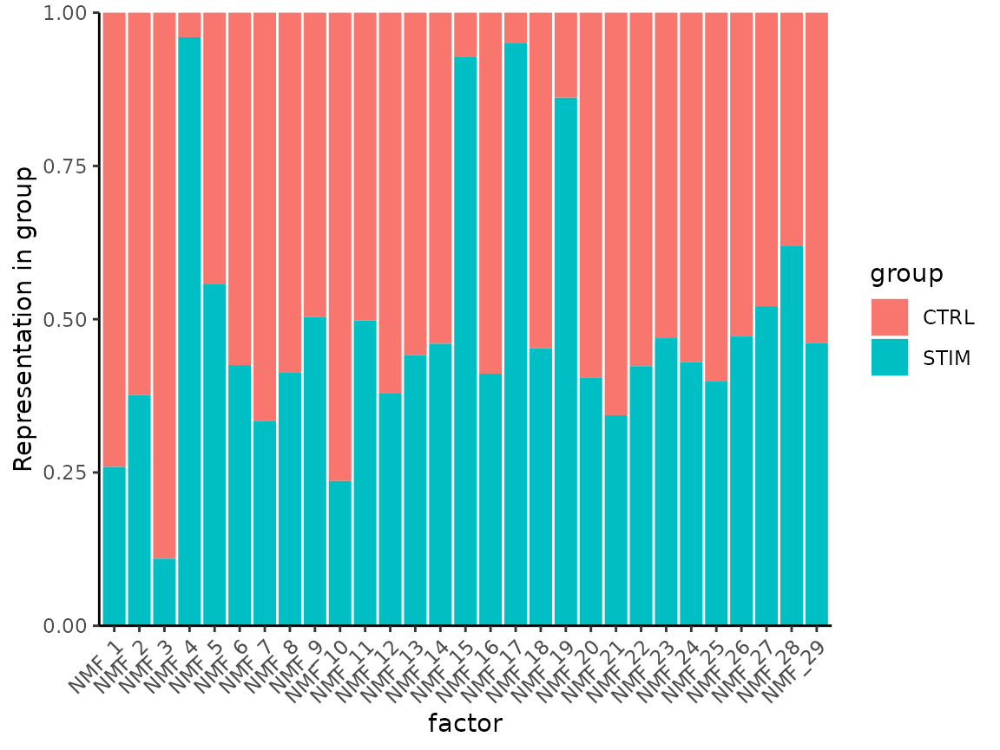
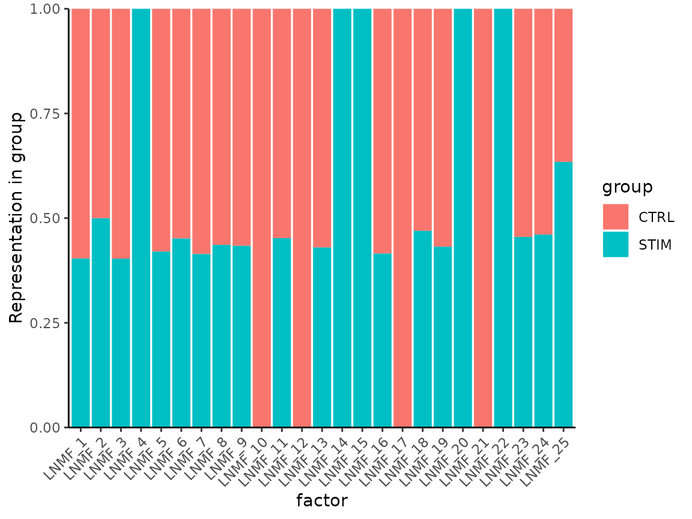

Batch Integration with Linked NMF
Zach DeBruine
2022-09-08
Source:vignettes/Batch_Integration_with_Linked_NMF.Rmd
Batch_Integration_with_Linked_NMF.RmdDetermine NMF Rank
First we determine number of factors using cross-validation.
Note the use of split.by = "stim", where we are
indicating that the “stim” field in the meta.data slot of
our Seurat object is a factor giving discrete groupings of samples
(either stimulated or unstimulated). The RunNMF function
will weight samples from both groups equally in the NMF objective,
regardless of whether the groups are of equal size.
RankPlot(ifnb)
Visualize contribution of groups to both factors:
MetadataPlot(ifnb, split.by = "stim", reduction = "nmf")
Some factors are almost exclusively explaining signal from one dataset, and not the other.
Run Linked NMF
Linked NMF will uncouple sample groups from factors in which they are only weakly represented. LNMF is initialized with the joint NMF model that we trained before, we just specify a cutoff for the minimum fractional representation of any sample group in any given factor at which it will be uncoupled from the factor.
ifnb <- RunLNMF(
ifnb,
split.by = "stim",
reduction.use = "nmf",
link.cutoff = 0.7,
verbose = FALSE)LNMF creates a new reduction in the Seurat object, lnmf.
Now examine how each group is represented in NMF factors:
MetadataPlot(ifnb, split.by = "stim", reduction = "lnmf")
We can visualize these models on UMAP coordinates using the joint model, the entire linked NMF model, and the linked NMF model using only shared factors:
ifnb <- RunUMAP(ifnb,
reduction = "nmf",
dims = 1:ncol(ifnb@reductions$nmf),
reduction.name = "jnmf_all",
verbose = FALSE)
ifnb <- RunUMAP(ifnb,
reduction = "lnmf",
dims = GetSharedFactors(ifnb, split.by = "stim"),
reduction.name = "lnmf_shared",
verbose = FALSE)
p_jnmf_umap <- DimPlot(ifnb, reduction = "jnmf_all", group.by = "stim")
p_lnmf_umap <- DimPlot(ifnb, reduction = "lnmf_shared", group.by = "stim")